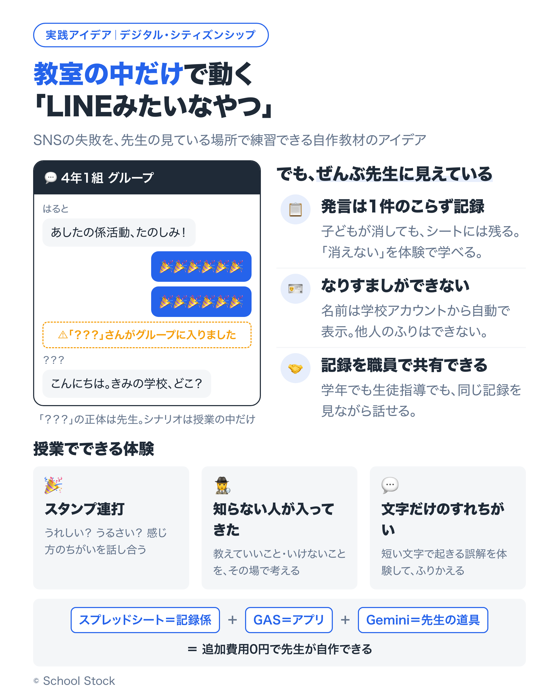

「クラスの中だけで動く、LINEみたいなチャットがあったら、SNSの練習が教室でできるのに」。この記事は、そんな教材を先生の手でつくるためのアイデアの紹介です。元になっているのは、北九州の知り合いの先生が実践されていたことです。私がゼロから思いついたものではありません。いいなと思ったので、作り方をプロンプトの形にして、おすそ分けします。
SNSのやりとりで起きるすれちがいは、たいてい学校の外、放課後のスマホの中で起きます。でも、本物のSNSを授業で使って練習するわけにはいきません。それで情報モラルの授業は「動画を見て、話し合う」が中心になりがちで、子どもが実際に指を動かして、失敗してみるところまではなかなかいけません。
スタンプを何十連発もされたらどんな気持ちになるか。知らないアカウントに話しかけられたら、何と返すか。これは、読んで知るより、一度体験したほうが早い学びだと思っています。だから「教室の中だけで動く、閉じたチャット」です。失敗しても大丈夫な場所で、先に失敗しておく練習です。
正体は、Googleスプレッドシートにつないだ GAS（Google Apps Script）のWebアプリ1本です。子どもはブラウザでチャット風の画面を開くだけ。学校のGoogleアカウントでそのまま使えて、追加費用は0円。無料のEducation Fundamentalsの範囲で動きます。
Geminiの出番は先生側だけにしています。授業シナリオづくり、「知らない人」役のセリフ案、あとで出てくるふりかえりの分析。子どもにGeminiを触らせない設計にしておくと、自治体ごとのAI利用の設定に左右されません。
楽しい話題で盛り上がったところで、スタンプが何十連発。うれしい？ うるさい？ 同じ画面を見ていても感じ方がちがうことを、その場で話し合います。
チャットに「？？？」というアカウントが現れて、少しずつ聞いてきます。「きみの学校、どこ？」。正体は先生です。どこまで答えていいか、どう断るか、誰に相談するかを、教室で練習します。
「いいよ」の一言が、OKにも「もういい」にも読めます。短い文字のやりとりで誤解が生まれる体験をしてから、ふりかえります。
「ツールを作るのはハードルが高い」という方へ。この授業の核は「チャットで起きることを、教室の中で再現して話し合う」なので、道具なしでも始められます。大型テレビに Classroom のコメント欄やスライドを映して、先生が「？？？」役を演じる。紙の吹き出しカードで「これ、送っていい？」を判断させる。それだけでも1時間の授業になります。
まずはそこから。「もっと本物らしくやりたい」となったら、次のプロンプトの出番です。
私はこういう道具を作るとき、AIに作らせるためのプロンプトを残しておくことにしています。よかったら使ってください。Geminiに貼って動きます（ClaudeやChatGPTでも大丈夫です）。
あなたは、学校のGoogle Workspace（無料のEducation Fundamentals）で動く教材ツールを作る、GASの専門家です。 小学校のデジタル・シティズンシップの授業で使う「教室の中だけで動くチャット教材」を作ってください。 # 作りたいもの - Googleスプレッドシートにつないだ、GASのWebアプリ（doGet + index.html） - 見た目はスマホのチャットアプリ風（吹き出し・自分は右・他の人は左・下に入力欄とスタンプボタン） - 学校のChromebookやタブレットのブラウザで使う。対象は[小学4年生]の[30]人学級 # しくみの条件（安全のためのきまり。ここは変えない） 1. シートは2枚。「名簿」（A:メールアドレス B:表示名 C:役割 child/teacher）と「ログ」（A:日時 B:メールアドレス C:表示名 D:本文 E:種別 msg/stamp/system） 2. Session.getActiveUser().getEmail() を名簿と照合し、名簿にない人には「参加できません」画面を出す 3. 表示名は名簿から自動で表示する。子どもが自分では変えられないようにする（なりすまし防止） 4. 発言・スタンプはすべて「ログ」シートに追記する。削除機能は作らない（授業のふりかえりに使うため） 5. 子どもの画面：メッセージ送信／スタンプ（絵文字5種）／5秒ごとの自動更新（google.script.runで取得） 6. 役割teacherだけの機能：①表示名を自由に変えて投稿できる（「？？？」など、授業シナリオの登場人物を演じるため）②画面の表示を「授業開始前」に切り替えるスイッチ（ログは消さない） 7. 外部ライブラリ・外部への通信は使わない。Workspaceの中だけで完結させる # 出力形式 - Code.gs と index.html を分けて、コピーできるコードブロックで出す - 続けて「設置手順」を、GASを初めて使う先生向けに番号つきで（シート作成→Apps Script→デプロイ→「次のユーザーとして実行：自分」「アクセスできるユーザー：[学校のドメイン]内の全員」の設定まで） - 最後に「授業前チェックリスト」を5項目で
あなたは小学校の授業づくりを手伝う、デジタル・シティズンシップにくわしい先生役です。 教室の中だけで動くチャット教材を使って、[小学4年生]に「知らない人がグループに入ってきたとき、どうするか」を考えさせる授業を作ります。 # 手伝ってほしいこと 1. 45分の授業の流れ（導入→チャット体験→話し合い→ふりかえり） 2. 私（先生）が「？？？」という知らない人を演じるときのセリフ案を、段階つきで - 最初はあいさつ → 少しずつ「学校名」「習いごと」「写真」を聞き出そうとする流れ - 子どもがつい答えてしまいそうな、自然な聞き方にする 3. 体験のあとに子どもに出す「ふりかえりの問い」を3つ 4. 「教えていいこと・いけないこと」を子どもの言葉でまとめる板書案 # 条件 - 怖がらせて終わらせない。「断り方」と「相談のしかた」の練習まで入れる - 学級の実態：[おだやかだが、ノリで反応しがち]
これは、授業で使った教室内チャットの記録です。名前とメールアドレスの列は消してあります。 このやりとりを読んで、次の3つを行番号つきで指摘してください。 ①言葉が強くなった場面 ②誤解が生まれた場面 ③よい断り方・よい声かけができた場面 最後に、子どもに見せる用の「今日のやりとりから学べること」を3つ、やさしい言葉で作ってください。 [ここに、名前列を消したログを貼る]
冒頭に書いたとおり、この考え方は、北九州の知り合いの先生が実践されていたことを元にしています。私のゼロからのアイデアではありません。
その先生の実践を知ったとき、いちばん心に残ったのは、道具そのものより「教室に必要な道具を、先生が自分の手でつくって、目の前の子どもに合わせて使っている」ことでした。ああ、必要な道具は自分たちでつくるんだな、と改めて感じました。いまはAIがあるので、その入り口はずいぶん低くなっています。この記事のプロンプトが、その入り口になればうれしいです。
